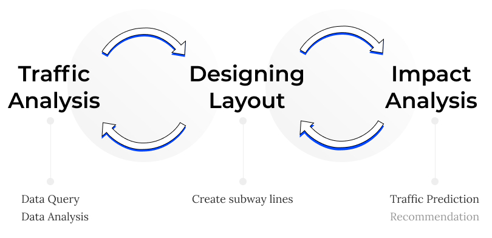
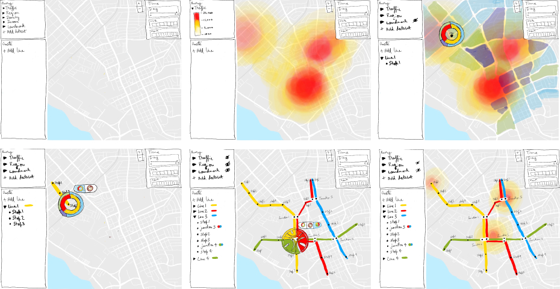
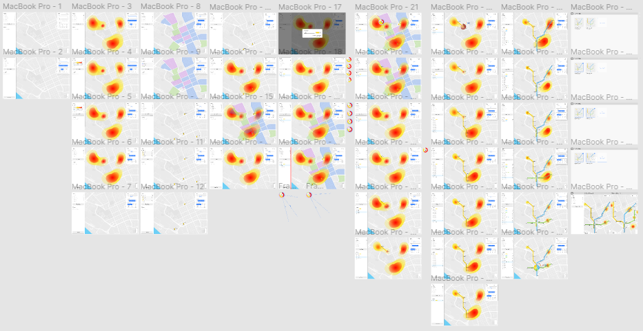
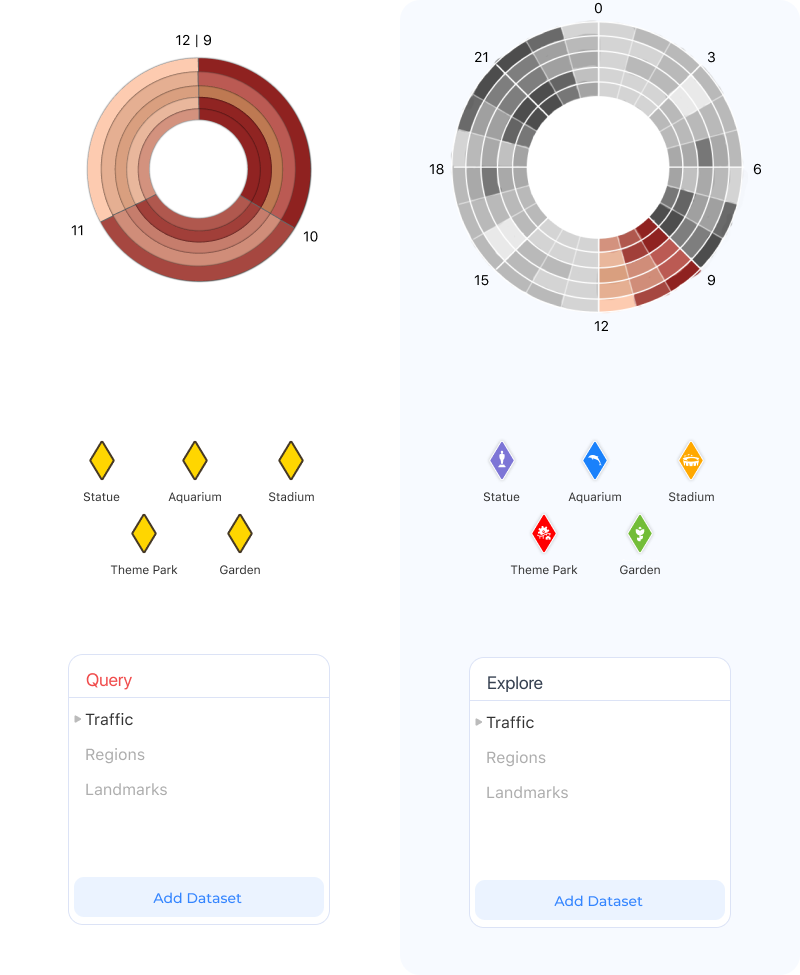

Design an application for a transportation engineer to design a new subway system for a given city whose main goal is to ensure a physical design that supports the best connection for high-traffic routes during high-peak traffic times.
...
With this in mind, I began to define the scope of the project and the topics I would need to cover through my design solution. I identified 3 main areas of focus - Traffic Analysis, Designing Layout and Impact Analysis.
...
This paper summarizes the existing visualization techniques to visualize
high-traffic datasets that
contain multiple variables, of which time and space are most
important.
Visualization of Time:
This case study highlights how proximity to subway stations affect people living in high-density low-income neighborhoods. Understanding this context helps design engineers understand how best to design subway lines that can serve the underserved areas of the city.
Subway maps abstract geographical details to help users navigate the subway with only essential information. Reading this article allowed me to understand the design choices made in subway maps and think of how it can be incorporated in the subway system design application.
...
Having a strong understanding of the task the user wishes to accomplish using the application and guided by research, I designed a few low-fidelity mockups to bring my idea to life.
Based on the initial exploration, I was able to define the key features and the interaction methods when using this application.
Designed in layers, the user can increase or decrease the complexity of the visualizations that best assist them in inferring insights and making decisions.
With grouping of lines and stops, the user gets to develop a sense of hirerachy and also gain easy access to control and edit each of these design elements.
Providing dynamic visualizations such as donut, radial and chord charts in create mode allows the user to focus on region of interest and leaves the guess work out of the design decisions.
Comparing multiple subway layout designs allows the user to analyze and compare the impact of each design on high-traffic zones.
Once I finalized the design features, I designed the wireframes that demonstrate the flow of the user when interacting with the application.

While I did not have access to a transportation engineer, I sought expert feedback to evaluate my design.
Design Experts
The experts suggested making the following changes:
Finally, I designed a high-fidelity mockup to depict what the actual application interface would look like.
...
Overall, I enjoyed taking on this design activity. Coming up with a design solution for a user group that you do not have direct access to and their profession that you do not know much about was challenging. However, utilizing other resources to conduct research and looking at other tools for inspiration, I was able to design solution that meets the user requirement. Designing from a data visualization perspective allowed me to push past my limits and eventually, also added value to the project.